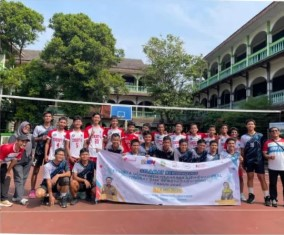

SMK Negeri 1 Kota Tangerang Meraih prestasi dalam O2SN Kota Tangerang 2026
Pada ajang Olimpiade Olahraga Siswa Nasional (O2SN) tingkat Kota Tangerang 2026, SMK Negeri 1 Kota Tangerang berhasil memborong sejumlah prestasi. Informasi yang dipublikasikan melalui kanal sekolah menunjukkan adanya raihan medali emas, perak, dan perunggu dalam kompetisi tersebut. Prestasi ini memperlihatkan bahwa pencapaian sekolah tidak hanya berada pada bidang akademik dan kejuruan, tetapi juga mencakup pengembangan bakat olahraga peserta didik.